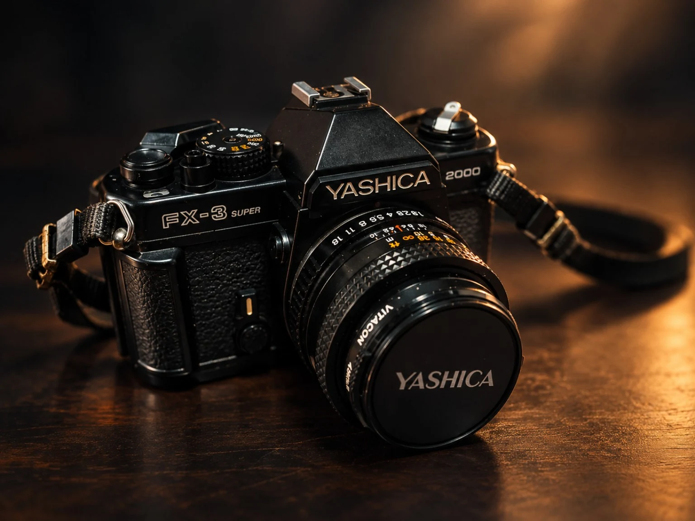

ABOUT DASSORU
A third eye
observing the world.
Photography by Basuru Jayasanka

WHERE IT BEGAN
The camera that started it all.
This is my father’s Yashica FX-3 Super 2000 — the camera with which I took my first photographs. I was around 12–14 years old then. I did not know where photography would take me, but looking through that viewfinder left a feeling that stayed with me.
THE BEGINNING
It started with a film camera.
My interest in photography began when I was around 12–14 years old. My father once had a Yashica FX-3 Super 2000, and having the chance to use that camera introduced me to the feeling of looking at the world through a viewfinder.
I still keep that Yashica today. Film photography, however, became difficult to continue because of the cost of film and processing. The interest never disappeared.
For many years I saved little by little. After roughly a decade of waiting and saving, I finally bought a Nikon D5300 with an 18–55mm kit lens and a 70–300mm lens in 2021.
LEARNING
A self-taught journey.
I am not a full-time professional photographer. Photography grew alongside my other work and responsibilities, mostly through self-learning, observation, practice and simply carrying a camera whenever an opportunity appeared.
My photographs have taken me through Sri Lanka, India, Myanmar and Seychelles. I am interested in wildlife, nature, landscapes, travel, street life, people, architecture and the small scenes that are easy to overlook.
I do not want DASSORU to be limited to one country or one photographic genre. The subject can change. The reason for pressing the shutter is what matters.
but I did not know it could carry this much feeling.”
That is the reaction I hope my photographs can create.
Sometimes I see an interesting moment and capture it before it disappears. Sometimes I wait. Sometimes the photograph comes from a journey, and sometimes it comes from an ordinary day close to home.
DASSORU is my way of keeping those moments. It is a portfolio, but it is also a personal visual journal — a record of the places I have been, the people and creatures I have noticed, and the feelings that made me stop and press the shutter.
Photography by Basuru Jayasanka
EXPLORE THE PORTFOLIO →